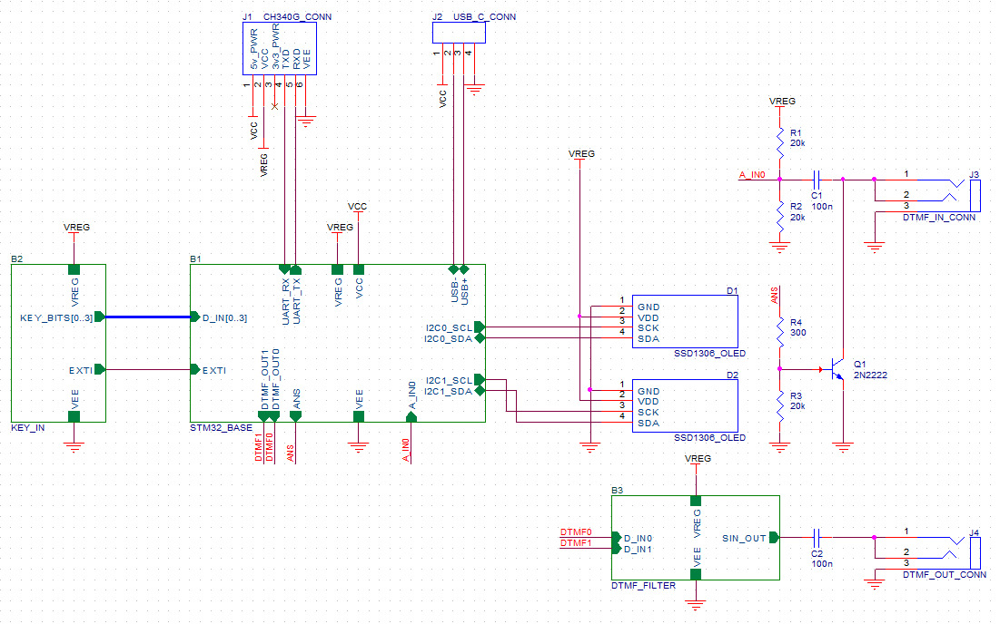
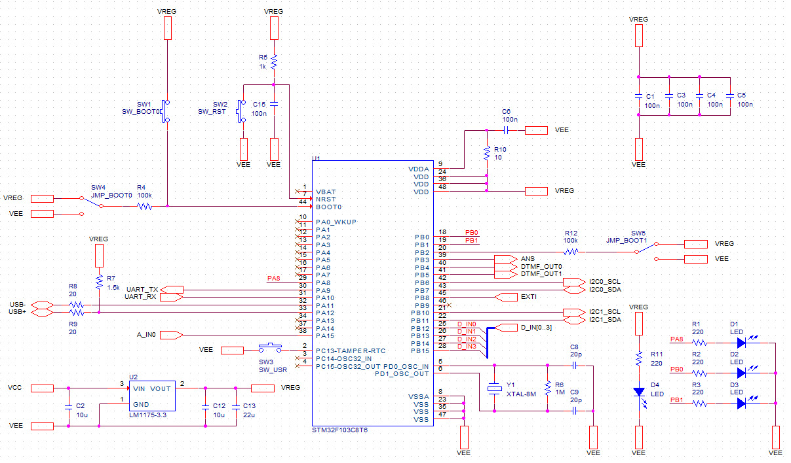
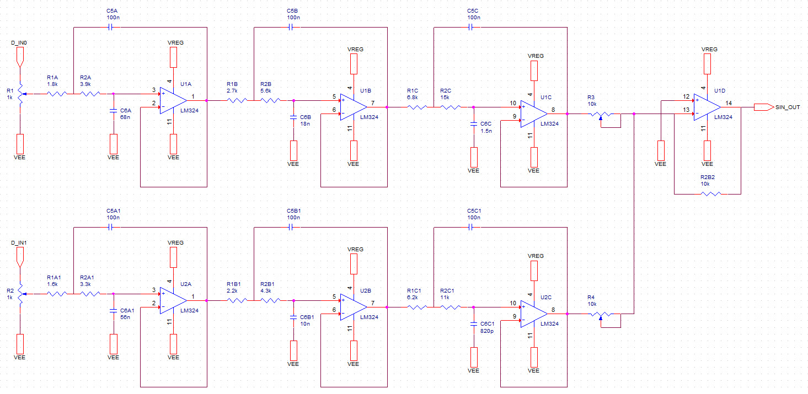
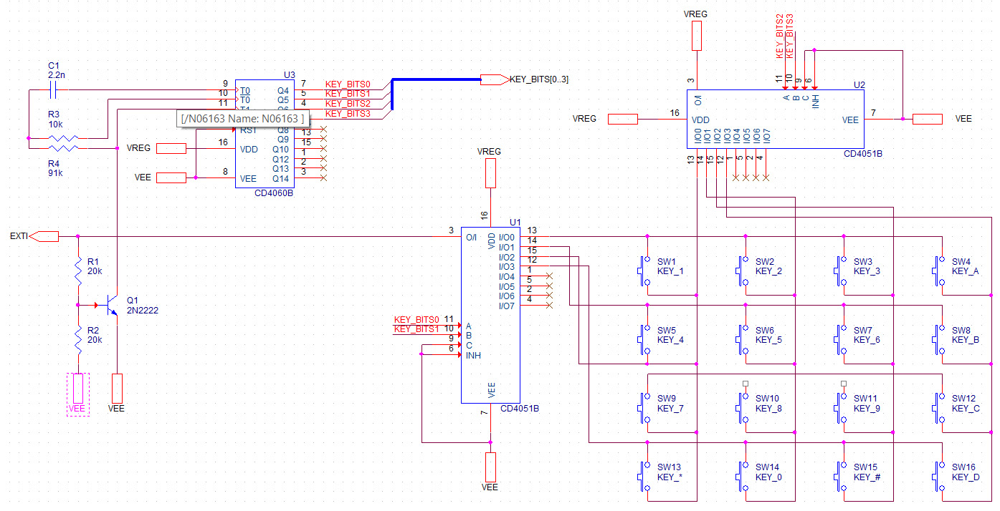
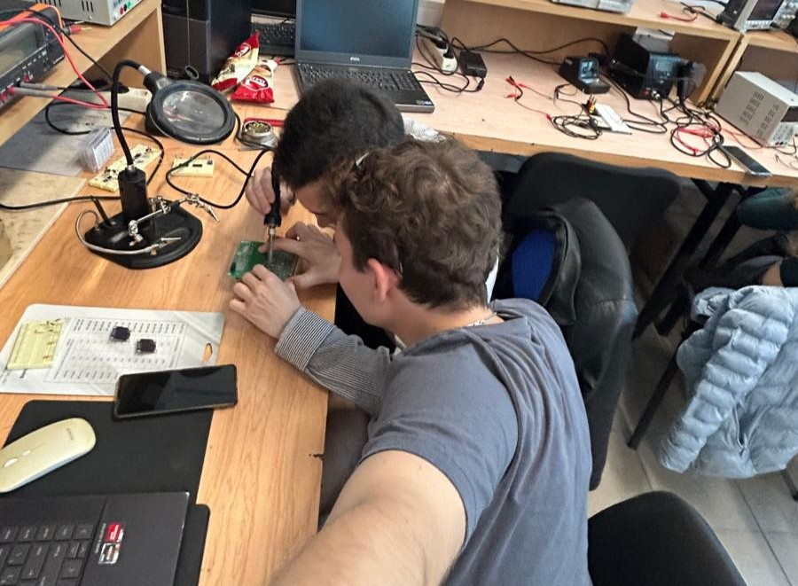
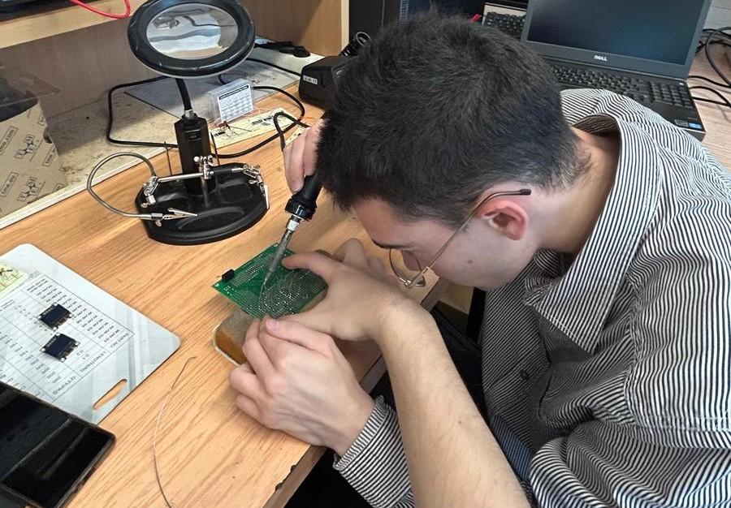
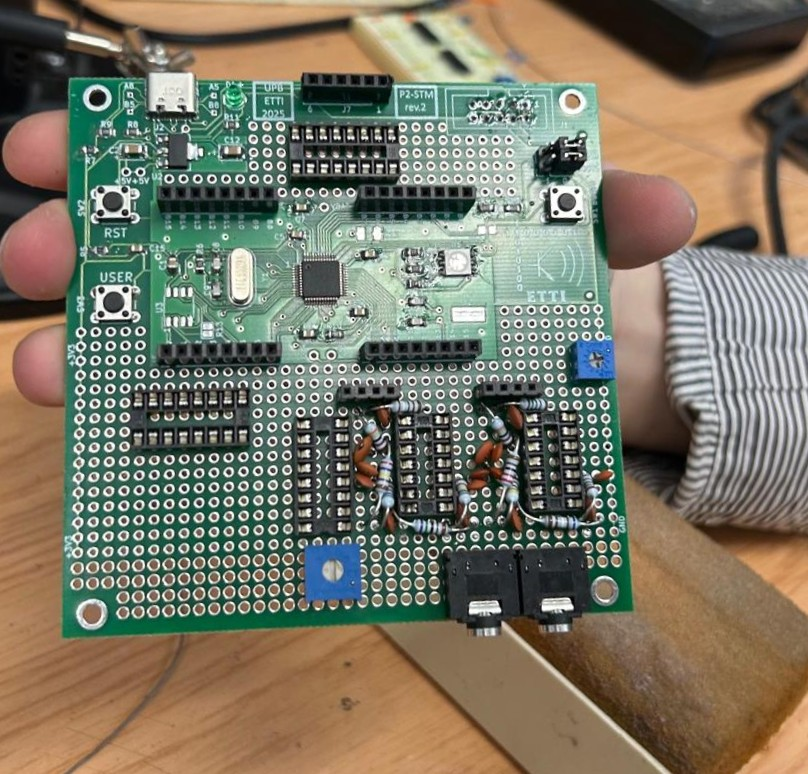

💖 Project Theme D10 - DTMF Transcoder with Display - Team 40 💖
🌸 Chapter I - Module Implementation 🌸
According to the D10 project topic, the goal is to design and implement a DTMF (Dual Tone Multi Frequency) decoder for GSM networks. Our team chose to expand the project idea into a DTMF transcoder (encoder + decoder). Input and output data from the transcoder are displayed on two SSD1306 OLED screens controlled via I2C. User input is captured through the USER button and a 16-key keypad following the DTMF standard.
From a technological point of view, for the final solution, we use the perfoboard area provided on the printed circuit board (PCB) supplied by the P2 Department of the Faculty of Electronics, Telecommunications, and Information Technology.
Regarding OLED screen control, the open-source library we initially used performed full memory refreshes regardless of how many pixels had changed, which was inefficient. We replaced it with a mechanism for partial memory updates. Additionally, our modified library supports multiple OLED displays on different I2C buses and addresses.
To optimize keypad handling with the STM32 microcontroller, the following components are used to implement a subsystem based on external hardware interrupts:
- CD4060B counter;
- Two CD4051B multiplexers/demultiplexers.
During normal operation, the internal oscillator of the counter cycles through all possible 4-bit combinations. These 4 bits serve, two at a time, as selector signals for the multiplexers. All line-column combinations for the 16-key keypad are thus covered. When a key is pressed and the multiplexers select the correct row and column, a continuous circuit from 3.3V to the external interrupt pin of the microcontroller is established.
When this circuit is completed, an NPN transistor shorts the resistor in the RC network connected to the counter's internal oscillator. The effect is that counting halts as long as the button is pressed, allowing the microcontroller to read the 4-bit output of the counter and determine which key was pressed.
Our STM32 microcontroller lacks a DAC (Digital-to-Analog Converter), so only digital signals can be generated. To produce DTMF tones, we pass these variable-frequency digital signals through a pair of 6th-order Chebyshev analog filters (3 Sallen-Key stages) with a 0.2 dB ripple in the passband. These filters strongly attenuate all harmonics except the fundamental, yielding clean, sinusoidal tones.
We aim to connect our solution to a real GSM terminal (an old, basic mobile phone) to interact with it during a GSM call. To answer the call, the microcontroller emulates the behavior of a headset with an answer button. By shorting the microphone terminal of the 3.5mm audio jack to ground, the call answer intent is signaled.
🌼 Chapter II - Hardware Description 🌼
The device interfaces with the user through two main components:
1. A 16-key DTMF keypad, used to generate standard tones according to the telephone keypad layout (rows and columns associated with dual-tone frequency pairs);
2. A USER button, used for auxiliary control operations such as testing or triggering custom behaviors.
Input and output data are visually displayed on two SSD1306 OLED displays (128x64 pixels), connected via I2C. One screen shows the user’s input (encoded data), and the other shows decoded data (from incoming tones). This parallel visualization aids in debugging, signal verification, and demonstration of the transcoding process.
Although many microcontroller development boards provide serial output (e.g., UART to USB), we opted for graphical display to offer a self-contained and user-friendly interface. This removes the need for a PC connection during demonstrations or in-field deployment.
Hardware Platform and Construction Approach
We used a perfoboard area integrated into a custom PCB. The advantage of this approach is:
It offers a stable mechanical platform with good soldering quality and support for wire routing;
It simplifies the integration of multiple I2C buses, analog filters and discrete components without the complications of fully custom PCB design.
Using perfoboard also encourages manual circuit understanding, requiring precise layout and signal integrity planning, a valuable skill in hardware development.
Display Communication and Optimization
Controlling OLED screens efficiently was one of the first engineering challenges we encountered. The default open-source SSD1306 libraries available for microcontrollers were designed for full memory refreshes on every update cycle, regardless of how many pixels had actually changed. This behavior introduced significant latency, especially when using multiple displays, and wasted bus bandwidth.
To resolve this, we redesigned the rendering logic to track and update only modified regions (partial memory updates). Our system now:
- Minimizes I2C traffic;
- Reduces power consumption (a concern in embedded systems);
- Allows parallel management of multiple displays on different I2C buses or addresses.
This optimization was not trivial and involved modifying the underlying memory buffer structure to support rectangular update regions, a technique borrowed from professional display controller firmware.
Keypad Subsystem with Interrupt-Driven Scanning
The 16-key keypad posed another interesting challenge: how to efficiently detect key presses with minimal microcontroller overhead. Traditional polling methods are inefficient and fail to scale well with higher-level applications. Instead, we implemented a hardware-interrupt-driven scanning system based on three main components:
- CD4060B binary counter with internal oscillator;
- Two CD4051B multiplexers/demultiplexers, which route signals dynamically based on the counter output.
The counter generates 4-bit binary codes that act as selector inputs for the CD4051B chips. These selector lines sequentially connect row and column lines of the keypad, effectively scanning all 16 combinations. When a key is pressed, a complete circuit is formed, sending a pulse to the external interrupt pin of the STM32 microcontroller.
What makes this setup efficient is its low-power nature and independence from the microcontroller’s processing cycles. Additionally, we integrated an NPN transistor that short-circuits the RC network of the counter's oscillator during a keypress, freezing the scan state and allowing precise reading of the current binary output to determine the active key.
This method ensures accurate and debounced detection without requiring complex software timing or sampling mechanisms.
DTMF Tone Generation: Digital Signals and Analog Filters
One of the project’s major technical issues was the generation of clean, sinusoidal DTMF tones using a microcontroller that lacks a DAC (Digital-to-Analog Converter). DTMF signals consist of the superposition of two sine waves, each from a predefined frequency set. While generating square waves digitally is trivial, doing so introduces strong harmonic components that distort the signal.
To address this, we implemented a two-channel digital output system, where each channel toggles GPIO pins at variable frequencies corresponding to DTMF tones. These square waves are then passed through 6th-order analog Chebyshev filters (with a ripple of 0.2 dB in the passband), designed using a cascaded Sallen-Key topology.
Key design notes:
- Chebyshev filters were selected for their sharp roll-off, important in suppressing harmonic content;
- The Sallen-Key stages were carefully matched for stability and minimal phase distortion;
- We performed SPICE simulations to validate the frequency response and expected THD (Total Harmonic Distortion) before physical implementation.
This hybrid approach, digital signal generation and analog filtering, allows us to create clean, analog-quality DTMF tones using a cost-effective microcontroller platform.
GSM Integration and Headset Emulation
The ultimate goal is to enable interaction with a standard GSM terminal (an old mobile phone) via audio signals, just as a user might enter numbers during a voice call. This introduces several practical considerations:
- How to inject audio into the phone? We use the microphone input of a 3.5mm audio jack;
- How to simulate answering a call? We discovered that shorting the microphone line to ground mimics the button press of a wired headset.
Thus, our STM32 microcontroller can effectively:
- Detect incoming calls (by monitoring line voltage or GSM module behavior);
- Simulate a headset pickup via a transistor-based circuit;
- Begin tone transmission through the audio channel upon connection.
This approach keeps the system simple, robust, and low-cost, leveraging standard analog audio signaling without needing specialized GSM modems.
Logical Flow and System Overview
Here’s a simplified version of the system logic:
1. The user presses a button or keypad key.
2. The microcontroller reads the input via interrupt-based logic.
3. It updates the OLED display with the pressed key.
4. Simultaneously, the system generates the corresponding DTMF tone digitally.
5. The digital signal is filtered into a clean sine wave.
6. The tone is transmitted to the GSM terminal through the audio jack.
7. Incoming tones (from the GSM call) are decoded via a FFT (Fast Fourier Transform) and displayed on the second OLED.
📸 Schematic Gallery 📸
Visual Overview of the Project
Here is a series of schematic diagrams that illustrate various parts of the project. These range from component layouts to full signal processing blocks:

Fig.1. Top Layer Schematic Description of the System

Fig.2. STM32 Hierarchical Block

Fig.3. Filtering Hierarchical Block

Fig.4. Keypad Hierarchical Block
📸 Development Stages 📸
Real Life Overview
This section features photos from the actual soldering process, offering a behind-the-scenes look at the physical assembly of the project.

Fig.5. Soldering the Filter Banks

Fig.6. Soldering the Filter Banks

Fig.7. Final Look of the Filter Banks
Fig.8. Preparing to Solder the Connection Wires
🌷 Chapter III - Software Description 🌷
To decode Dual-Tone Multi-Frequency (DTMF) symbols, the program deployed on the STM32 microcontroller makes use of functions from the CMSIS-DSP (Cortex Microcontroller Software Interface Standard - Digital Signal Processing) library. This library is widely recognized as the industry standard for digital signal processing in embedded systems. It provides a comprehensive set of DSP functions that are highly optimized for ARM Cortex-M cores, such as those used in the STM32 family of microcontrollers. CMSIS-DSP is frequently the first choice among embedded systems engineers when implementing spectral analysis, filtering, and vector arithmetic due to its performance and portability.
In practice, integrating a full-featured DSP library into a resource-constrained microcontroller environment often involves trade-offs, particularly with regard to memory usage. Our STM32 microcontroller has limited flash memory and RAM, a common limitation in many embedded platforms. In such scenarios, off-the-shelf DSP libraries, while powerful, may include more functionality than is actually needed by a given project. This surplus of unused features can consume critical system resources unnecessarily.
In our case, the CMSIS-DSP library includes precompiled tables of twiddle factors for FFT operations across a wide range of sizes-from 16-point to 4096-point FFTs. These twiddle factors, which are essentially precalculated trigonometric coefficients, are essential for the computation of FFTs, allowing the algorithm to achieve its characteristic speed advantage. However, our application only requires FFTs of a fixed length: specifically, 64 points, corresponding to the size of the input window for DTMF signal segments. Recognizing this, we took the engineering decision to modify the CMSIS-DSP source code to remove all twiddle factor definitions for FFT sizes other than 64.
This type of modification is not uncommon in the embedded systems domain. It’s a well-known strategy used by engineers working on systems with tightly constrained memory footprints-such as IoT devices or battery-powered wireless sensors. By customizing the library in this way, we achieved a significant reduction in flash memory consumption, without sacrificing any of the required computational capability. After these adjustments, the DSP library could be successfully compiled and integrated into our STM32 development environment.
It’s worth noting that the standard approach for decoding DTMF signals in many embedded systems is the Goertzel algorithm. This algorithm is particularly well-suited for detecting a small number of predetermined frequencies, such as the 8 distinct tones used in DTMF signaling. Goertzel is attractive due to its low computational and memory demands; many engineers choose it for exactly these reasons when working on 8-bit microcontrollers or legacy systems.
However, in our implementation, we deliberately chose to utilize the Fast Fourier Transform (FFT) instead of Goertzel. While FFT is more computationally intensive, it also provides broader insight into the frequency content of the signal, and its output can be leveraged for additional diagnostic or monitoring tasks beyond DTMF decoding. This makes FFT a more versatile tool, particularly for systems that might later be extended to support multi-tone analysis, noise detection, or adaptive filtering. FFT also enables us to consider future use cases involving spectral profiling or signal logging, without requiring major architectural changes.
One of the major concerns when implementing real-time DSP on microcontrollers is managing CPU load and ensuring that processing overhead does not interfere with other time-critical operations. To address this, our software design is centered around efficient CPU usage and extensive use of hardware peripherals. The STM32 architecture provides a rich set of internal peripherals-timers, DMA controllers, ADCs,that can be harnessed to offload tasks from the main processor. We took advantage of this capability by structuring our firmware to rely on interrupt service routines (ISRs) to trigger computations.
This design method is in line with best practices in embedded systems engineering. By deferring processing tasks to ISRs, the CPU remains idle when no action is required, reducing power consumption and improving responsiveness. Engineers frequently use this technique in applications such as motor control, audio processing, and sensor fusion, where predictable response time is more important than raw throughput.
Another key optimization in our system relates to the generation of DTMF tones. In many implementations, tone generation is handled in software, with the processor actively calculating and outputting the waveform sample-by-sample. This approach, while flexible, places a significant burden on the CPU and can interfere with concurrent real-time tasks. In contrast, our system delegates the entire task of signal synthesis to two of the STM32’s hardware timers Timer3 and Timer4. These timers are configured to generate periodic waveforms corresponding to the required DTMF frequencies, eliminating the need for any runtime DSP computation on the processor itself.
This type of peripheral-driven waveform generation is an achievement of efficient embedded design. Engineers commonly employ similar methods when generating PWM signals, sine wave outputs for audio, or reference clocks for communication protocols. The key advantage is that once configured, these peripherals operate autonomously, allowing the CPU to focus exclusively on supervisory tasks, user input handling, or communication protocols.
In summary, our software implementation achieves a balanced and efficient architecture by combining the proven robustness of CMSIS-DSP with tailored memory optimizations, peripheral-driven processing, and FFT-based spectral analysis. While the Goertzel algorithm would have sufficed for basic DTMF decoding, our choice of FFT positions the system for future expansion and dynamic signal analysis. These decisions reflect common design patterns in the embedded engineering community: reduce memory where possible, leverage hardware to minimize CPU load, and design with future extensibility in mind.
🌸 Bill of Materials 🌸
Item No.
Quantity
Reference
Value
Package
Note
Supplier/Product Code
Unit Price (RON)
1
6
C5C,C5B,C5A,C5C1,C5B1,C5A1
100n
UPB
2
1
C6A
68n
UPB
3
1
C6A1
56n
UPB
4
1
C6B
18n
UPB
5
1
C6B1
10n
UPB
6
1
C6C
1.5n
UPB
7
1
C6C1
820p
UPB
8
1
R1A
1.8k
UPB
9
1
R1B
2.7k
UPB
10
4
R1,R2,R5,R2C1
1k
UPB
11
1
R1C
6.8k
UPB
12
2
R2A,R2A1
3.9k
UPB
13
1
R2B
5.6k
UPB
14
1
R2C
15k
UPB
15
3
R3,R4,R2B2
10k
UPB
16
1
R1A1
1.6k
UPB
17
1
R1B1
2.2k
UPB
18
1
R2B1
3.3k
UPB
19
1
R1C1
6.2k
UPB
20
2
U1,U2
LM324
DIP14
Operational Amplifiers
ICPE
21
1
C1
2.2n
UPB
22
2
Q1
2N2222
TO92
NPN Transistors
UPB
23
2
R1,R2
20k
UPB
24
1
R4
91k
UPB
25
17
SW1-SW16
KEYPAD Keys
ICPE
26
2
U1,U2
CD4051B
DIP14
Multiplexers
ICPE
27
1
U3
CD4060B
DIP16
Counter
ICPE
28
6
C1,C3,C4,C5,C6,C15
100n
UPB
29
2
C2,C12
10u
UPB
30
2
C8,C9
20p
UPB
31
1
C13
22u
UPB
32
4
D1,D2,D3,D4
LED
UPB
33
4
R1,R2,R3,R11
220
UPB
34
2
R4,R12
100k
UPB
35
1
R6
1M
UPB
36
2
R8,R9
20
UPB
37
1
R10
10
UPB
38
1
SW1
BOOT Switch
UPB
39
1
SW2
RESET Switch
UPB
40
1
SW3
USER Switch
UPB
41
2
SW4, SW5
BOOT MODE SELECTORS
UPB
42
1
U1
STM32F103C8T6
Microcontroller
UPB
43
1
U2
LM1175-3.3
Regulator
ICPE
44
1
Y1
XTAL-8M
Quartz Oscillator
UPB
45
2
C1,C2
100n
UPB
46
2
D1,D2
SSD1306_OLED
OLED display with I2C address hardcoded by the manufacturer
The primary outcome we are most satisfied with is the system's capability to decode up to 50 DTMF symbols per second with both accuracy and reliability. Achieving this level of performance within the constraints of a resource-limited embedded platform highlights the efficiency of our software-hardware integration and the thoughtful optimizations we introduced throughout the design.
This result reflects a high throughput for a microcontroller-based DTMF decoder, especially considering the real-time constraints and limited clock cycles available on typical STM32 platforms. Many engineers in similar scenarios struggle to strike the right balance between speed and precision. Often, higher symbol rates come at the cost of robustness-particularly in noisy environments or under timing jitter. Our approach, which relies on FFT-based spectral analysis and interrupt-driven execution, has proven resilient even under rapid successive tone inputs.
From a system architecture perspective, this implementation is both scalable and extensible, designed not only to fulfill the current specifications but also to accommodate a wide range of future enhancements. Several paths for further development have been identified, some of which are commonly explored by practitioners in the embedded domain:
SPI-based displays: Currently, screen output or any visual representation of decoded data is limited by the bandwidth of slower interfaces such as I²C or parallel GPIO. Transitioning to SPI-enabled displays could enable higher refresh rates, especially beneficial in applications with continuous user interaction or real-time feedback. This is a typical enhancement seen in wearable or portable diagnostic tools where latency is critical.
Replacing analog filters with DAC and digital synthesis techniques: In many professional systems, engineers phase out analog filtering and tone generation in favor of digital methods such as Direct Digital Synthesis (DDS). Using a DAC in conjunction with a precomputed waveform table or DDS controller allows for fine-grained control of output signals and simplifies PCB layout by reducing analog complexity. Moreover, such a digital pathway enables easier reconfiguration via firmware updates.
Expanding system integration: By exposing communication channels such as UART, SPI, or USB CDC, the embedded DTMF decoder can be connected to desktop applications, logging systems, or control dashboards. This integration can allow for broader use cases such as remote command reception, telemetry, or even device pairing. In practice, UART remains one of the most commonly used methods for debugging and interfacing, due to its simplicity and widespread support.
Dedicated functionality triggered via DTMF commands: A powerful use case we explored was the on-demand transmission of GPS coordinates using DTMF tones. This approach, which essentially uses the audio path as a low-bandwidth command and control channel, can be found in remote telemetry and asset tracking applications where wireless coverage is sparse or limited to audio communication (e.g., through voice networks). Implementing such functionality within a single embedded system underlines the flexibility of our platform.
Beyond meeting the initial requirements, we approached this project not merely as a task of engineering implementation, but as a sandbox for advanced experimentation in embedded systems design. The work enabled us to engage with digital signal processing, hardware-software co-design, and real-time system optimization in a meaningful way. These are critical domains in modern embedded engineering, and projects like this one serve as valuable stepping stones for understanding complex industrial systems.
Many embedded engineers face the dilemma of choosing between off-the-shelf solutions and custom development. Our experience confirms that a well-planned, modular design grounded in DSP principles and efficient use of hardware resources can outperform generic solutions, especially when performance, extensibility, and reliability are required.
In conclusion, this project not only delivered a performant DTMF decoding solution, but also laid the groundwork for future extensions in communication, control, and signal processing domains. It reflects what we believe to be a solid model for embedded development: prioritize clean hardware-software separation, optimize for present constraints, and leave room for tomorrow’s innovations.